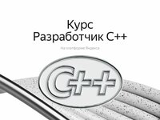

|
РЕКЛАМА
market.yandex.ru
Цифровой эмулятор монитора, виртуальный дисплей HDMI...
Реклама
C 01 февраля диабетики 2го типа будут получать ежемесячно выплату
Информация из архива: в день гибели Гагарина с ним произошло...
25 февраля вступил в силу закон: коснется всех пенсионеров!
Закон подписан: кто старше 70 - обязан в кротчайший срок...
Путин утвердил 13-ю пенсию: получат все, кроме...

РЕКЛАМА•16+
practicum.yandex.ru
Научитесь Программировать на C++. Курс от Яндекса
Библиотека сайта rus-linux.net
Реклама
Не упустите: пенсию увеличат сразу на 30%, если в трудовой...
Docker на i386-ом компьютере
Оригинал: Docker on i386
Автор: Matt Whiteley
Дата публикации: 31 Aug 2013
Перевод: Н.Ромоданов
Дата перевода: январь 2015 г.
У меня есть абсолютно устаревшей, но героически стабильный компьютер Dell PowerEdge 2550, которому сейчас уже много лет. Очень хорошо, когда есть место для работы над проектами для личного саморазвития без почасовой оплаты за ресурсы и т.д., но иногда реальной проблемой может стать низкая производительность компьютера. Большая часть работы, которую я делал в последние несколько лет, была сосредоточена вокруг виртуализации, и поэтому машина, в основном, пылилась. Недавно я выполнял определенную работу с использованием Docker и был неожиданно обрадован тем, что я могу еще раз развернуть на этой машине некоторые из моих проектов. Так или иначе, в тот момент я нигде не читал о том, что Docker поддерживается только на amd64. Были лишь следующие комментарии:
Поискав еще немного, я обнаружил, что Docker не является несовместимым с 32-разрядными системами, а 32-разрядные системы просто не поддерживаются. Прочитав все эти комментарии я впрягся в работу.
Работа над сервером началась с того, была установлена полностью обновленная версия Ubuntu 13.04. Первоначально я пытался использовать для Go уже имеющиеся пакеты deb, но для Docker они были слишком стары (версия 1.0.2), поскольку требуется, по крайней мере, версия 1.1. Затем я попытался использовать двоичный дистрибутив, но он был скомпилирован с поддержкой команд SSE2. Поэтому я вынужден был перейти к сборке Go из исходного кода.
Сборка Go не требует слишком многого, но нам нужен компилятор и mercurial для клонирования исходного кода.
$ sudo apt-get -y install build-essential mercurial
Мало того, что использовался 32-разрядный сервер, но он был достаточно старый, и в нем не хватало поддержки команд SSE2.
$ export GO386=387
Клонируем исходные коды Go.
$ hg clone -u release https://code.google.com/p/go /home/mwhiteley/p/go
...
Собираем Go и добавляем его в наш пути.
$ pushd /home/mwhiteley/p/go/src
$ ./all.bash
...
$ popd
$ export GOPATH=/home/mwhiteley/go
$ export PATH=$GOPATH/bin:$PATH:/home/mwhiteley/p/go/bin
$ go version
go version go1.1.2 linux/386
Чтобы использовать Docker нам нужно еще следующее: инструментальные средства для работы с пользовательским пространством контейнеров Linux и модулем ядра для поддержки улучшенной универсальной многослойной файловой системы Advanced Multi Layered Unification Filesystem.
$ sudo apt-get -y install git linux-image-extra-$(uname -r) lxc xz-utils
Клонируем исходные коды Docker.
$ git clone dotcloud/docker $GOPATH/src/github.com/dotcloud/docker
...
Включаем и собираем 32-разрядную версию Docker.
Файл различий diff:
diff --git a/server.go b/server.go
index 646cb44..33cd4ea 100644
--- a/server.go
+++ b/server.go
@@ -1247,8 +1247,8 @@ func (srv *Server) ContainerCopy(name string, resource string, out io.Writer) er
}
func NewServer(flGraphPath string, autoRestart, enableCors bool, dns ListOpts) (*Server, error) {
- if runtime.GOARCH != "amd64" {
- log.Fatalf("The docker runtime currently only supports amd64 (not %s). This will change in the future. Aborting.", runtime.GOARCH)
+ if runtime.GOARCH != "amd64" && runtime.GOARCH != "386" {
+ log.Fatalf("The docker runtime currently only supports amd64 and 386 (not %s). This will change in the future. Aborting.", runtime.GOARCH)
}
runtime, err := NewRuntime(flGraphPath, autoRestart, dns)
if err != nil {
Файл различий можно взять здесь.
$ pushd $GOPATH/src/github.com/dotcloud/docker
$ curl https://gist.github.com/whiteley/6400552/raw/server.go.diff | git apply -
$ go get -v github.com/dotcloud/docker/...
$ go install -v github.com/dotcloud/docker/...
$ popd
$ docker version
Go version (client): go1.1.2
Go version (server): go1.1.2
Last stable version: 0.6.1
Базовый образ является просто минимальной файловой системой и мы можем создать ее с помощью debootstrap. В файле /etc/apt/sources.list будет всего лишь единственный установочный репозиторий.
$ sudo debootstrap raring /tmp/rootfs
$ for d in raring raring-security raring-updates raring-backports
for> do echo "deb http://archive.ubuntu.com/ubuntu ${d} main universe multiverse"
for> done | sudo tee /tmp/rootfs/etc/apt/sources.list
deb http://archive.ubuntu.com/ubuntu raring main universe multiverse
deb http://archive.ubuntu.com/ubuntu raring-security main universe multiverse
deb http://archive.ubuntu.com/ubuntu raring-updates main universe multiverse
deb http://archive.ubuntu.com/ubuntu raring-backports main universe multiverse
$ sudo tar czf /home/mwhiteley/p/raring_base32_rootfs.tgz -C /tmp/rootfs .
Теперь мы можем создать группу docker и запустить демон. Члены группы будут иметь доступ для подключения непосредственно к демону, работающему в роли root, и потенциально могут получить на хост-компьютере права root. Внимательно прочитайте инструкцию и делайте это только на машине разработчика.
$ sudo addgroup docker
Adding group `docker' (GID 1001) ...
Done.
$ sudo addgroup mwhiteley docker
Adding user `mwhiteley' to group `docker' ...
Adding user mwhiteley to group docker
Done.
$ sudo docker -d
Loading containers: done.
2013/08/31 17:25:41 WARNING: Your kernel does not support cgroup swap limit.
2013/08/31 17:25:41 Listening for HTTP on /var/run/docker.sock (unix)
Теперь мы можем в еще одном терминале (открывает новую командную оболочку для того, чтобы была активирована ваша принадлежность к группе) импортировать базовый образ.
$ cat /home/mwhiteley/raring_base32_rootfs.tgz | docker import - mwhiteley/base32
c755b018548a
$ docker images
REPOSITORY TAG ID CREATED SIZE
mwhiteley/base32 latest c755b018548a 21 minutes ago 187.4 MB (virtual 187.4 MB)
Запустите простой тест для того, чтобы убедиться, что все, кажется, работает.
$ docker run c755b018548a env
HOME=/
PATH=/usr/local/sbin:/usr/local/bin:/usr/sbin:/usr/bin:/sbin:/bin
container=lxc
HOSTNAME=d60803fb36fe
Создайте файл Dockerfile и соберите образ
$ cat <'EOP' >/home/mwhiteley/p/docker/chef/Dockerfile
heredoc> FROM c755b018548a
heredoc> MAINTAINER Matt Whiteley <mattwhiteley@gmail.com>
heredoc> RUN apt-get update
heredoc> RUN apt-get -y install curl git ruby1.9.3
heredoc> RUN curl -L https://www.opscode.com/chef/install.sh | bash
heredoc> EOP
$ docker build /home/mwhiteley/p/docker/chef
...
---> b8d729360f11
Successfully built b8d729360f11
$ docker images
REPOSITORY TAG ID CREATED SIZE
<none> <none> b8d729360f11 19 seconds ago 88.5 MB (virtual 710.8 MB)
mwhiteley/base32 latest c755b018548a 35 minutes ago 187.4 MB (virtual 187.4 MB)
Ничего себе, посмотрите на получившиеся размеры! Очевидно, что пакет ruby1.9.3 в Ubuntu вытягивает из сети массу зависимостей, которые нам не нужны, когда мы не пользуемся Руби; это позволит нам сэкономить много места. В настоящий момент давайте просто убедимся, что все это работает.
$ docker run b8d729360f11 chef-solo --version
Chef: 11.6.0
Собранный мною Docker работает на моем Pentium III, имеющем скорость 866MHz! После этого можно для тестовых сред собрать несколько улучшенных образов.